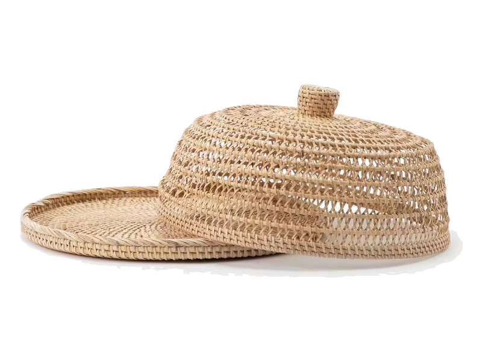

Komitmen ESG & Fair Trade
Pemberdayaan Berkelanjutan untuk Kemandirian Sentra Desa
Kami memutus rantai tengkulak bertingkat yang kerap menekan posisi tawar pengrajin. Dengan penetapan harga beli yang adil, pelatihan standarisasi mutu, dan kepastian kuota produksi rutin bulanan, kami membina lebih dari 120 kepala keluarga pengrajin untuk bertumbuh secara mandiri.
Upah Adil
Transparansi tanpa potongan tengkulak bertingkat
Substitusi Plastik
Alternatif alami yang dapat terurai ramah lingkungan

Set Cloche Wadah Saji Anyaman Presisi